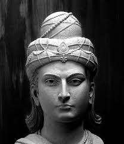

Ashoka

Ashoka (fallecido en el año 238 a. C. , India) fue el último gran emperador del Dinastía Maurya de la India . Su vigoroso patrocinio de El budismo durante su reinado (c. 265-238 a. C .; también citado como c. 273-232 a. C. ) impulsó la expansión de esa religión por toda la India. Tras su exitosa pero sangrienta conquista de...En el país de Kalinga , en la costa este, Ashoka renunció a la conquista armada y adoptó una política que llamó "conquista pordharma ” (es decir, por los principios de la vida correcta).
Para dar amplia publicidad a sus enseñanzas y su obra, Ashoka las dio a conocer mediante anuncios orales y grabados en rocas y pilares en lugares adecuados. Estas inscripciones, las Los edictos rupestres y los edictos de pilares (por ejemplo, el capitel de león del pilar hallado en Sarnath , que se ha convertido en el emblema nacional de la India), en su mayoría datados en varios años de su reinado, contienen declaraciones sobre sus pensamientos y acciones, y ofrecen información sobre su vida y sus actos. Sus declaraciones rezumaban franqueza y sinceridad.
Según sus propios relatos, Ashoka conquistó el país de Kalinga (actual estado de Odisha ) en el octavo año de su reinado. El sufrimiento que la guerra infligió al pueblo derrotado lo conmovió hasta tal punto que renunció a las conquistas armadas. Fue en esa época que conoció el budismo y lo adoptó.
Bajo su influencia e impulsado por su temperamento dinámico , decidió vivir conforme al dharma y predicarlo, y servir a sus súbditos y a toda la humanidad.
Ashoka declaró repetidamente que entendía el dharma como la práctica enérgica de las virtudes sociomorales de honestidad, veracidad, compasión, misericordia, benevolencia , no violencia, comportamiento considerado con todos, “poco pecado y muchas buenas obras”, no extravagancia, no codicia y no dañar a los animales. No mencionó ninguna religión o culto en particular, ni doctrinas filosóficas. Habló del budismo solo a sus correligionarios y no a otros.
Ashoka El Grande
Además de ser un político y conquistador transformado en pacifista, Ashoka fue un visionario comunicador. Fue uno de los primeros líderes en la historia del mundo en usar medios públicos (como inscripciones en piedra y metal) para comunicar directamente con sus súbditos. A través de sus edictos, hablaba sobre el respeto a todas las religiones, el cuidado de los animales, y el deber del gobierno hacia su pueblo.
Ashoka también promovió el proteccionismo animal, algo radical para su tiempo. Prohibió los sacrificios rituales y estableció clínicas para el cuidado de animales, reflejando el espíritu budista de compasión.
En el ámbito internacional, Ashoka fue uno de los grandes difusores del budismo. Envió misiones diplomático-religiosas a Sri Lanka (donde su hijo Mahinda convirtió al rey cingalés), a Asia Central y al sudeste asiático.
Esto convirtió a la India en el centro espiritual de Asia, influenciando el arte, la religión y la filosofía en regiones tan lejanas como China y Japón.
Tras la muerte de Ashoka, el imperio se redujo debido a invasiones, deserciones de príncipes del sur y disputas sobre la ascensión. El último gobernante, Brihadratha, fue asesinado en el 185 a . C. por su comandante en jefe brahmán , Pushyamitra, quien fundó la dinastía Shunga , que gobernó la India central durante aproximadamente un siglo.
Ashoka El Grande